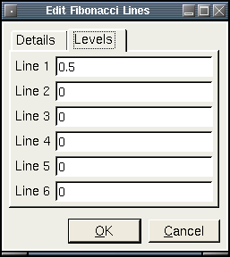
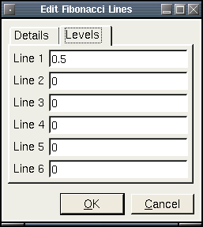

Chart Objects
Description
Chart objects are basic drawing elements that are commonly used in
technical analysis to mark and illustrate various chart properties. The
following chart objects are used in Qtstalker:
- Buy Arrow - a small up pointing arrow
- Sell Arrow - a small down pointing arrow
- Horizontal Line - a horizontal line the extends the width of the
chart area
- Vertical Line - a vertical line that extends the height of the
chart area
- Fibonacci Line - a group of horizontal line(s) that extends the
width of the chart used to indicate a fibonacci retracement level
- Text - plain text
- Trend Line - a line that can can have any angle or length the
user wishes
To create a chart object, select draw mode from the main toolbar and
right click with the mouse on the chart
you wish to apply it to. This can be either the main chart area or any
of the indicators that appear in the indicator chart area. Select "New
Chart Object" from the popup menu so the following dialog appears:

After selecting the chart object type you want to create, the mouse
pointer will change
to a hand pointer and a message will display in the status bar
explaining what is needed. Usually, just select the point you want the
chart object to appear by clicking the left mouse button. The object
will then appear on the chart.
Editing an object:
To modify any chart objects on a chart, select it by left clicking with
the mouse anywhere on the object. The object will be selected when one
or more little square boxes appear next to or on top of the object. You
then can right click the mouse for a context menu for the object. You
may also double-left click on the object to bring up the edit dialog
directly. You may also move an object by first left clicking on the
little box and then moving the mouse pointer. Once a new spot is
selected for the object just left click the mouse to drop it.
Buy Arrow
The buy arrow settings are defined as follows:
- Color - The color of the arrow.
- Set Default - If checked, all settings will default to the
current values when new ones are created.

Sell Arrow
The sell arrow settings are defined as follows:
- Color - The color of the arrow.
- Set Default - If checked, all settings will default to the
current values when new ones are created.

Horizontal Line
The horizontal line settings are defined as follows:
- Color - The color of the line.
- Set Default - If checked, all settings will default to the
current values when new ones are created.

Vertical Line
The vertical line settings are defined as follows:
- Color - The color of the line.
- Set Default - If checked, all settings will default to the
current values when new ones are created.

Fibonacci Line
When creating a fibonacci line, the user is prompted to first select
the high point of the range followed by the low point. The fibonacci
line settings are defined as follows:
- Color - The color of the line.
- Set Default - If checked, all settings will default to the
current values when new ones are created.
- Line 1 to Line 6 - User defined retracement levels. eg. 1.0 =
100%, 0.5 = 50%. Set to zero if no line is wanted.
 

Text
The text settings are defined as follows:
- Color - The color of the text.
- Font - The font to use for the text.
- Label - The actual text to appear.
- Set Default - If checked, all settings will default to the
current values when new ones are created.

Trend Line
User selects a start and end point for the trendline. The trendline
will be auto extended if needed.
The trend line settings are defined as follows:
- Color - The color of the trend line.
- Bar Field - The bar field to lock the trendline point on. Only
used if 'Use Bar' is selected.
- Use Bar - If checked, bar field values are used instead of user
selected points.
- Set Default - If checked, all settings will default to the
current values when new ones are created.
- Extend Line - If checked, the line will extend into the infinite
future. If not checked, the line will only be drawn between the start
and end points selected.